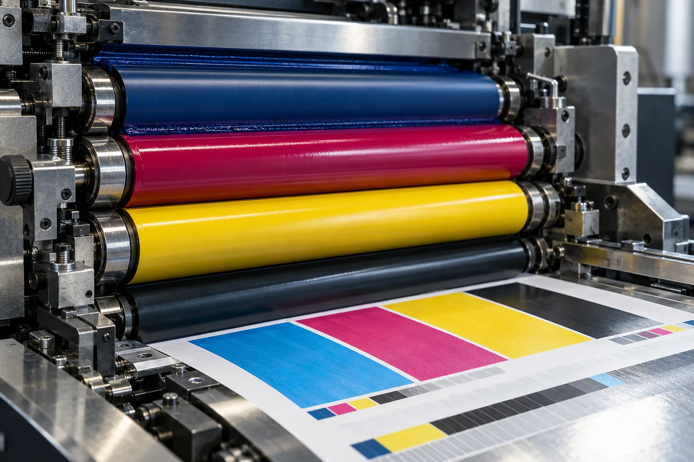
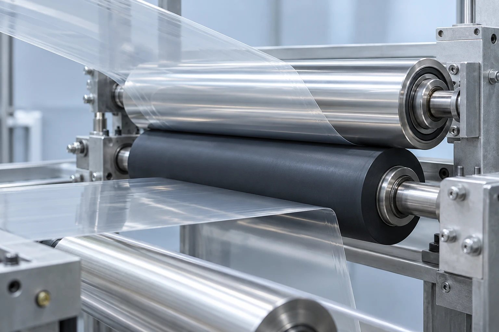
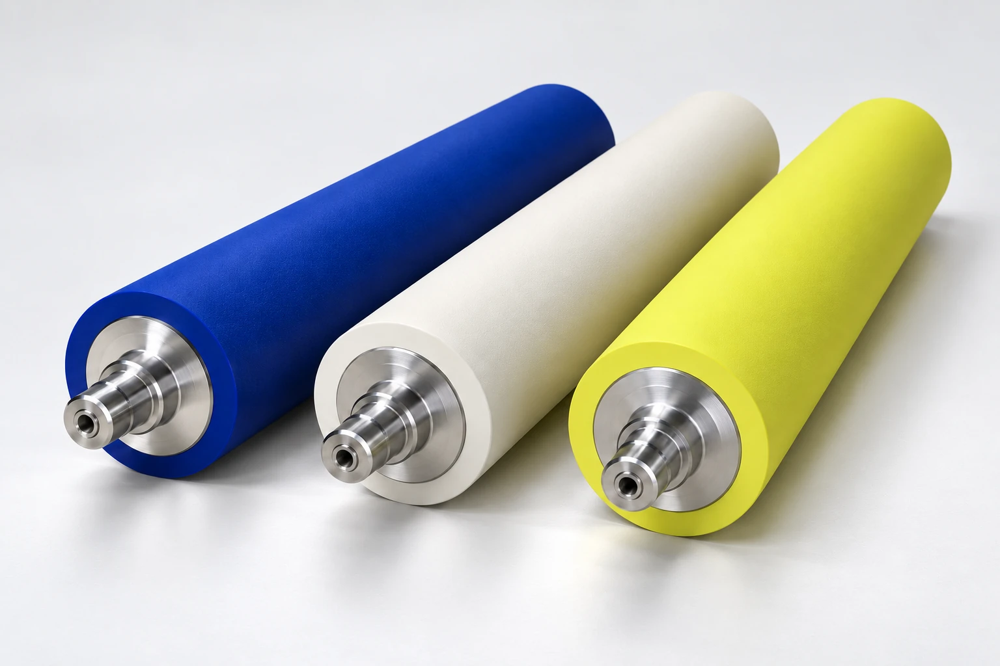

Explore Meiwa’s full portfolio, from offset inking and dampening to film handling and specialty surfaces. Material selection begins with your process and operating conditions.
01 — PRINTING RUBBER ROLLERS
Built around the demands of the press.
Offset, gravure, flexo, newspaper and label printing each place different demands on the roller. These named Meiwa families address ink transfer, water balance and high-speed operation.

INK TRANSFER / PROCESS VISUALIZATIONAn illustrative view of rollers at work in offset printing.
Sheet-fed & rotary offset
BZ · Black Zest UV Summit II
BZ inking rollers are designed for low heat generation and stability during high-speed printing.
UV Summit II addresses UV-ink requirements with stable material properties and resistance to surface hardening.
Commercial & newspaper rotary
BW · Black Web BN · Black News NCD-III / IV
BW and BN combine low heat generation with tear resistance for commercial web and newspaper presses.
NCD-III/IV addresses plate-edge scarring on high-speed web presses.
Dampening & water transfer
MD Aquaphilic
MD focuses on water retention and transfer. Aquaphilic addresses chemical and water resistance, helping slow crazing and ageing.
The fountain solution and cleaning chemistry are important parts of the selection.
Impression-cylinder materials address abrasion, ozone and static-control requirements.
Furnisher and fountain rolls support consistent ink lay-down for the application.
Product families from the presentation; terminology checked against Meiwa’s printing range. Suitability and specifications are confirmed for each enquiry.
02 — BEYOND PRINTING
A working surface. Across manufacturing.
Industrial rubber rolls
From nip rolls to winding touch rolls, Meiwa’s industrial range addresses the material, contact and operating conditions of the production line.
Film processing
Stretching, guide, corona-discharge, laminating and winding rolls. Ozone resistance and static control are key compound considerations.
Paper manufacturing
Felt, pick-up, back-up and winding rolls, with material choices for abrasion resistance and water-holding performance.
Plywood & steel lines
Spreader, coating and guide rolls engineered for solvent resistance and demanding duty cycles.

FILM HANDLING / PROCESS VISUALIZATIONAn illustrative film-processing scene, created to explain the application.
03 — SPECIALTY ROLLS
Beyond the rubber covering.
Surface cleanliness, static control, lightweight cores and release properties complete the portfolio.

SURFACE CLEANLINESS
Dust-removal rolls
Rolls for plate and sheet cleanliness, including demanding electronic-material, precision-equipment and optical-film applications. The processed surface and contamination concern guide the choice.
Material options for static-control and ozone-exposure requirements on film lines. They are intended to reduce dust pickup and related defects when matched to the process.
Ultra-light carbon fiber reinforced polymer core rolls for printing and film processing. Discuss span, speed, loading and surface requirements to assess the core construction.
Meiwa’s portfolio includes both no-adhesive and ceramic rolls. Non-stick rolls use composite surface modification with special thermal spraying and sealing treatments. Ceramic rolls are a separate specialty surface option; coating and finish are specified against the application.
Illustrative catalogue images. The surface-treatment image depicts the non-stick range.
04 — CUSTOMER VALUE
Material choices. Production benefits.
Six material benefits guide the conversation. The right compound and specification connect these properties to your operating conditions.
01
Low heat generation
Supports stable operation during high-speed press runs.
02
Dimensional & hardness stability
Helps maintain roller properties over time and supports longer service life.
03
Ink compatibility
Ranges for UV and eco-friendly inks, including phthalate-ester-free options.
04
Ozone & abrasion resistance
Compound options for the exposure and wear demands of film and gravure lines.
05
Static control
Anti-static materials are intended to reduce dust pickup and associated print defects.
06
Continuity & total cost
Appropriate roller selection aims to reduce stoppages, improve print consistency and lower total operating cost.
Performance depends on the selected material, press conditions, maintenance and application. Discuss your requirement before agreeing a specification.
Start with your process.
Share the press or line model, roller position, dimensions, ink or substrate, speed, temperature and cleaning chemistry. These details help define the suitable material.